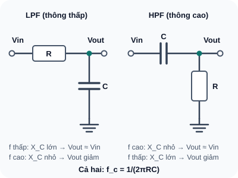
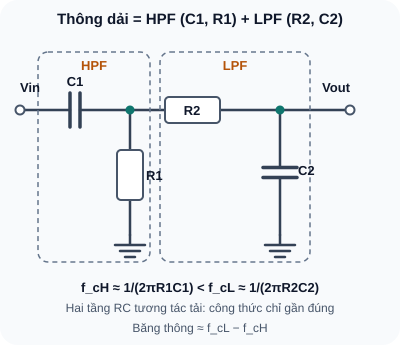

Bộ Lọc Tín Hiệu — Low Pass, High Pass, Band Pass
Kiểm soát tần số nào đi qua, tần số nào bị chặn — nền tảng của xử lý âm thanh, lọc nhiễu cảm biến và giao tiếp RF.
- Hiểu tại sao cần bộ lọc — nhiễu, tín hiệu không mong muốn
- Tính và thiết kế RC Low Pass Filter — f_c = 1/(2πRC)
- Tính và thiết kế RC High Pass Filter
- Band Pass = HPF + LPF kết hợp
- Hiểu độ dốc suy giảm: bậc 1 = –20dB/decade, bậc 2 = –40dB/decade
- Ứng dụng: lọc nhiễu ADC, anti-aliasing, tách DC offset
- Mô phỏng Bode plot trong LTSpice và Falstad
- Đo đặc tính lọc thực tế bằng oscilloscope và signal generator
1. RC Low Pass Filter (LPF)
Cho qua tần số thấp, chặn tần số cao. Tần số cắt f_c là điểm tín hiệu bị suy giảm –3dB (≈ 70,7% biên độ).

Đọc mô tả D31-1
Thông thấp: Vin qua R nối tiếp tới Vout, tụ C từ Vout xuống GND. Thông cao: Vin qua tụ C nối tiếp tới Vout, điện trở R từ Vout xuống GND.
2. Bảng tham chiếu nhanh thiết kế LPF/HPF
| f_c mong muốn | Chọn C | Tính R = 1/(2πf_cC) | Ứng dụng |
|---|---|---|---|
| 10Hz | 10µF | R = 1/(2π×10×0,00001) = 1592Ω → 1,5kΩ | Lọc nhiễu nguồn 50Hz |
| 159Hz | 100nF | R = 1/(2π×159×0,0000001) = 10kΩ | PWM → Analog, audio treble cut |
| 1kHz | 100nF | R = 1/(2π×1000×0,0000001) = 1591Ω → 1,5kΩ | Lọc băng thông analog; chọn chống aliasing theo tần số lấy mẫu và phổ nhiễu |
| 20kHz | 10nF | R = 1/(2π×20000×0,00000001) = 796Ω → 820Ω | Audio low-pass, chặn siêu âm |
| 100kHz | 10nF | R = 1/(2π×100000×0,00000001) = 159Ω | EMI filtering, RF decoupling |
3. Band Pass Filter — Chỉ cho qua dải tần cụ thể

Đọc mô tả D31-2
Vin qua C1 nối tiếp tới nút 1; R1 từ nút 1 xuống GND tạo HPF. Từ nút 1 qua R2 nối tiếp tới nút 2 là Vout; C2 từ nút 2 xuống GND tạo LPF.
4. Ứng dụng bộ lọc trong thực tế
| Tình huống | Loại lọc | f_c |
|---|---|---|
| Lọc nhiễu 50Hz của lưới điện khỏi cảm biến | LPF bậc 2 | 10Hz |
| Anti-aliasing trước ADC 8kHz | LPF đủ bậc | Cần suy giảm tín hiệu không mong muốn trước Nyquist 4kHz; chọn f_c thấp hơn theo bậc lọc và dải tín hiệu |
| PWM 490Hz → Analog (DAC giả) | LPF | ~50Hz (1/10 f_PWM) |
| Tách DC offset khỏi tín hiệu AC (coupling) | HPF | 1–10Hz (tùy ứng dụng) |
| Lọc giọng nói trước microphone | BPF | 300Hz–3kHz |
| Chặn tần số radio (EMI) | LPF (ferrite bead) | 10–100MHz |
1: f_c = 1/(2πRC) → R = 1/(2π×50×0,000001) = 1/(0,000314) = 3183Ω → chọn 3,3kΩ. f_c_thực = 1/(2π×3300×0,000001) = 48,2Hz ≈ 50Hz ✓
2: f_c = 1/(2π×10000×0,0000001) = 159Hz. Tại 1kHz: tỷ lệ f/f_c = 1000/159 = 6,29. |A| = 1/√(1 + (f/f_c)²) = 1/√(1+39,6) = 1/√40,6 = 1/6,37 = 0,157. V_out = 1V × 0,157 = 157mV. Tín hiệu bị suy giảm đáng kể (–16dB).
3: HPF (f_c_H=1kHz, C=10nF): R_HPF = 1/(2π×1000×10×10⁻⁹) = 15,9kΩ → chọn 15kΩ. LPF (f_c_L=10kHz, C=10nF): R_LPF = 1/(2π×10000×10×10⁻⁹) = 1,59kΩ → chọn 1,5kΩ. Nối HPF(C=10nF, R=15kΩ) + LPF(R=1,5kΩ, C=10nF) nối tiếp.